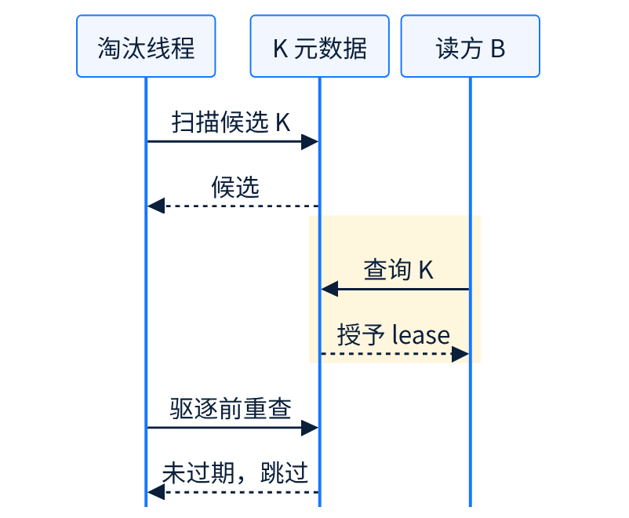

已经选中要淘汰的 KV，为什么又被跳过了？
摘要：census 先扫描出候选；读方随后查询同一个 key 并拿到读租约，真正驱逐前重检，发现租约未过期，于是跳过 K。候选只是快照，读租约、hard pin、soft pin 和后台引用各保护一层。
从一次候选扫描说起
Mooncake 的缓存接近满载。淘汰线程做 census 时扫描到 key K：它的读租约已经过期，持有可淘汰的 MEMORY 副本，也不是 hard pin。K 进入候选池。
在候选池里，K 的时间戳比较老，排在较前的位置。按这个快照，它像是一个合适的回收对象。
但 census 和真正驱逐是两阶段。中间可能插入新的读取，K 也可能正被下沉任务当作源副本。先看一次读取：
读方实例 B 查询 K，Master 授予读租约，把 K 的租约截止时间推到
now + 10 秒（默认 TTL）；B 拿到副本描述，准备从 R1 搬运数据；
淘汰线程按候选顺序处理到 K，在真正驱逐前重新查表、重新检查租约和可淘汰性；
K 的租约尚未过期，本次普通淘汰跳过它。
如果没有第 3 步的重检，淘汰线程就会按旧快照删掉一个刚刚承诺给 B 的读取窗口。

图注：淘汰线程先扫描出候选；浅黄区标出候选扫描之后插入的读取，读方查询 K 并获得 10 秒租约。真正驱逐前重新检查，租约未过期，于是跳过 K。候选只记录 key 与时间戳，重检是正确性的一部分。
census 只把“读租约已过期、有可淘汰副本、非 hard pin”的对象放进候选池；soft pin 对象走另一轮处理。候选只记录 key 和时间戳，不持有迭代器。这些条件在驱逐时都可能变化，所以重检是正确性的一部分。
四种保护，各管一件事
读租约
保护：普通读取的时间窗口；Master 承诺窗口内不主动删除。
改变回收结果：新读取把截止时间推到
now + TTL；到期后保护结束，但不代表立即回收。
hard pin
保护：对象的强保留标记，创建后不可变。
改变回收结果：census 第一关就跳过；不会因时间到期自动解除。
soft pin
保护：写入方承诺的一段优先保护期，默认 30 分钟。
改变回收结果：默认配置允许淘汰 soft-pinned 对象；第一轮不足时才在第二轮处理。
后台引用计数
保护：下沉（offload）、复制、提升等任务把某个副本当作源。
改变回收结果：
refcnt > 0的 MEMORY 副本不可淘汰；任务结束并dec_refcnt后才可能回收。
读租约默认 10 秒，它只是“时间窗内的不删除承诺”，不是互斥锁，也不是数据有效期。读操作本身不会增加副本的 refcnt；读路径完全靠租约保护。
hard pin 与 soft pin 也不能混为一谈。hard pin 直接阻止淘汰；soft pin 表达的是“暂时别删”，默认 30 分钟，仍可能在容量压力下被淘汰，具体取决于 allow_evict_soft_pinned_objects 的配置。
这些条件可能共同影响淘汰，但它们并不是同一把锁。判断一个对象能不能回收，要分别看读租约、pin、副本状态和后台引用。
淘汰副本，不一定删除对象
淘汰只移除 MEMORY 副本。evict_replicas 弹出 refcnt == 0 的 MEMORY 副本并释放内存，但只要对象还有一个 LOCAL_DISK/DFS 副本，metadata.IsValid() 仍为真，元数据不会被删。
所以“内存用量下降”与“这个 key 再也读不到”不能画等号。只有最后一个有效副本也被移除，才进一步涉及 EraseMetadata。
元数据清理也不只是从 map 中删除一个 key。它可能需要取消未完成的 offload 任务、释放引用、更新容量统计，避免留下孤儿任务。
下沉和淘汰如何配合？
有些策略会先把对象加入下沉任务，并保护作为源的副本；入队失败后，是跳过还是强制回收，还要看配置。
try_evict_or_offload 在开启 offload_on_evict_ 且对象还没有 LOCAL_DISK 副本时，先从可淘汰的 MEMORY 副本里挑一个推到卸载队列并 inc_refcnt 钉住，再淘汰其余冗余内存副本。如果入队失败且没有 offload_force_evict_，它返回 0、本轮跳过——这是“宁可少腾空间，也不静默丢数据”的默认语义。
因此，“触发淘汰”不等于“立即释放空间”。保护条件、任务队列与策略都会影响本轮结果。
这也解释了为什么容量压力可能反映到写入延迟上：写入需要空间，而空间回收本身需要协调。
总结
淘汰是两阶段：census 先按读租约、可淘汰副本和 hard pin 选出候选；真正驱逐前再查表、重检租约与可淘汰性。候选只是快照，重检是正确性的一部分。
读租约、hard pin、soft pin 和后台引用计数保护的不是同一件事。淘汰 MEMORY 副本也不等于删除对象：只要还有 LOCAL_DISK/DFS 副本，元数据仍可能有效；触发淘汰也不等于立即释放空间。下沉如何完成、内存副本何时回收，见第 10 篇。
源码延伸：读租约（lease）、pin、census、驱逐重检与元数据清理。版本基线为 v0.3.13.post1。